"Тіло" Ровера
Корпус марсохода Perseverance називають теплою електронній коробкою, або коротше "WEB". Як і кузов
автомобіля, кузов ровера - це міцний зовнішній шар, який захищає комп'ютер та електроніку ровера (що
в основному є еквівалентом мозку та серця ровера). Таким чином, корпус ровера забезпечує захист
життєво важливих органів ровера та регулювання температури.
Тепла електронна коробка закрита зверху деталлю, що називається Rover Equipment Deck. Палуба Rover
Equipment робить ровер схожим на конвертований автомобіль, дозволяючи місце для щогли ровера та
камер сидіти в марсіанському повітрі, роблячи фотографії з чітким видом на місцевість під час
подорожі ровера.
"Мозги" марсохода Mars 2020
На відміну від людей та більшості тварин, мозок ровера - його комп’ютер - знаходиться в його кульовому тілі.
Комп’ютерний модуль називається Rover Compute Element (RCE) - насправді в організмі є два однакові RCE, тому
завжди є запасний «мозок».
Rover Compute Element взаємодіє з інженерними функціями марсохода Perseverance через дві мережі, які
відповідають аерокосмічному промисловому стандарту, розробленому спеціально для вимог високої надійності
літаків і космічних кораблів. Крім того, RCE мають спеціальне призначення спрямовувати інтерфейси з усіма
інструментами ровера для обміну командами та науковими даними.
Камери уникнення небезпеки (HazCams):
Наполегливість містить шість нещодавно розроблених камер виявлення небезпеки, які називаються HazCams:
чотири спереду та дві ззаду корпусу ровера. HazCams виявляє небезпеку для переднього та заднього шляхів
марсохода, таких як великі скелі, траншеї або піщані дюни.
Інженери також використовують передні HazCams, щоб побачити, куди рухатись роботом-рукою, щоб робити виміри,
фотографії та збирати зразки гірських порід та грунту.
Під час руху ровер часто зупиняється, щоб зробити нові стереозображення шляху, що рухається вперед, щоб
оцінити потенційні небезпеки. Тривимірні види дають Mars 2020 можливість самостійно приймати рішення про те,
куди їхати, не консультуючись з кожним кроком з командою ровера на Землі.
Інженерні камери
Камери уникнення небезпеки (HazCams)
Навігаційні камери (Navcams)
CacheCam
Mars 2020 використовує нове покоління інженерних камер, що спираються на можливості минулих камер марсохода.
Ці "вдосконалені" інженерні камери дають набагато більш детальну кольорову інформацію про місцевість навколо
ровера. Вони мають різні функції: вони вимірюють грунт навколо ровера для безпечної їзди, перевіряють стан
обладнання ровера та підтримують Деякі допомагають визначити найкращий спосіб наблизитись до наукових цілей.
"Розширені" інженерні камери для водіння
Покращені інженерні камери для водіння допомагають людським операторам на Землі точніше керувати марсоходом
і краще орієнтувати рухи руки, буріння та інших інструментів, які наближаються до цілей. Набагато ширше поле
зору дає камерам набагато кращий огляд самого ровера. Це важливо для перевірки працездатності різних частин
ровера та вимірювання змін кількості пилу та піску, які можуть накопичуватися на поверхнях ровера. Нові
камери також можуть робити знімки під час руху ровера.
Покращені інженерні камери мають однаковий корпус камери, але використовують різні лінзи, вибрані для
конкретного завдання кожної камери.
Тестування інженерних камер Mars 2020
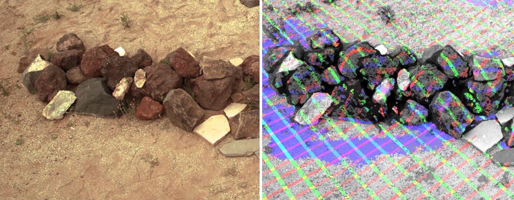
На цих навігаційних камерах Mars 2020, або Navcam, видно купу гірських порід, знятих з відстані близько 15
метрів (близько 50 футів) у зоні випробувань "Mars Yard" в JPL. Зображення ілюструють один із способів
використання даних камери для виявлення контурів цілі на відстані. Такі вимірювання дають роверу та його
команді знання, необхідні для планування точних подорожей та рухів рук.
Навігаційні камери (Navcams):
Дві кольорові стереокамери для навігації, які називаються Navcams, допомагають інженерам безпечно
орієнтуватися в Perseverance, особливо коли марсохід працює автономно, приймаючи власні навігаційні рішення
без консультацій з контролерами на Землі.
Розташовані високо на щоглі ровера, ці дві камери допомагають інженерам управляти марсоходом навколо Марса.
Вони можуть побачити на відстані 25 метрів (82 фути) такий маленький предмет, як м’яч для гольфу. Перш ніж
Наполегливість «їде сліпо», навігаційні камери спочатку допомагають забезпечити безпечний шлях. Режим сліпої
їзди виникає, коли інженери наказують марсоходу проїхати певну відстань у певному напрямку, а «мозок»
комп’ютера ровера обчислює відстань від обертання коліс без шукає або перевіряє пробуксовку колеса.
Mastcam-ZГотові до крупного плану (або
широкого
кута): подвійні камери Mastcam-Z Mastcam-Z
Mastcam-Z - це назва системи камер, встановленої на щоглі, яка оснащена функцією масштабування на ровері
Perseverance. Mastcam-Z має камери, які можуть збільшувати, фокусувати та робити 3D-фотографії та відео на
високій швидкості, щоб забезпечити детальний огляд віддалених об’єктів.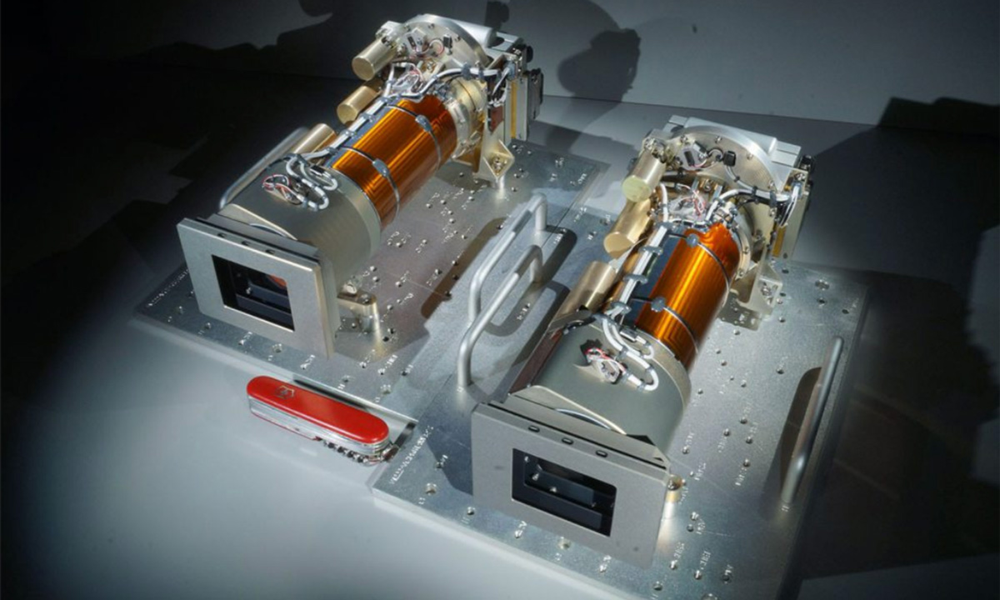
Щогловийпристрій SuperCam:
Щогловий пристрій SuperCam: щогловий
пристрій SuperCam перед установкою на верхню дистанційно-зондувальну мачту ровера Perseverance.
SuperCam
SuperCam на марсоході Perseverance досліджує гірські породи та ґрунти за допомогою камери, лазера та
спектрометрів для пошуку органічних сполук, які можуть бути пов’язані з минулим життям на Марсі. Він може
ідентифікувати хімічний та мінеральний склад мішеней, таких як олівцеві відстані, з відстані більше 20 футів
(7 метрів).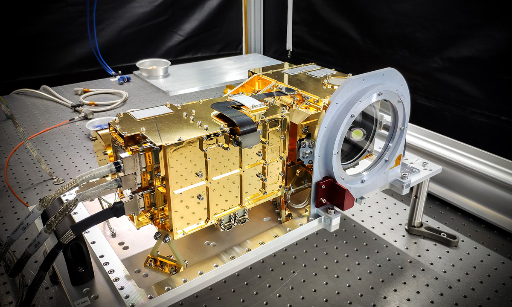
Нова камера для запису колекції зразків
Нова камера для запису колекції зразків
CacheCam:
"CacheCam" - це одна камера, яка дивиться вниз у верхній частині зразка кешу. Робляться фотографії зразків
матеріалів та пробірок, коли вони готуються до герметизації та кешування. Це допомагає вченим «спостерігати»
за зразками під час їх отримання та веде облік всього процесу для кожного зібраного зразка. 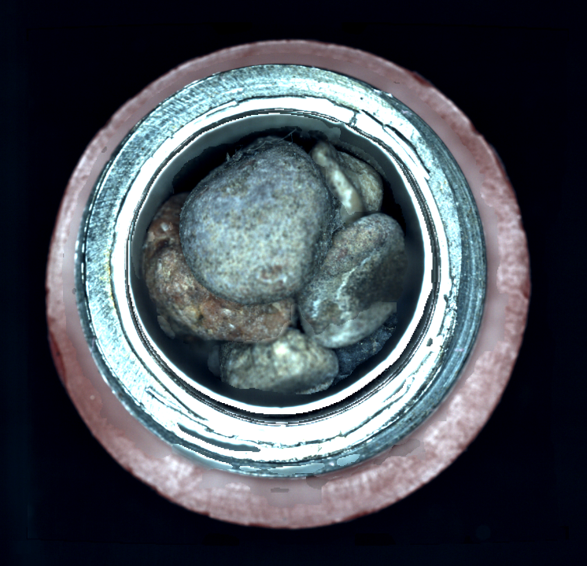
Мікрофони на Perseverance Rover
Мікрофони на Perseverance Rover
Роботи повторили значну частину людського сенсорного досвіду на Марсі. Камери давали нам зір, роботизовані
руки, руки та ноги забезпечували дотик, а хімічні та мінеральні датчики дозволяли нам відчувати смак і запах
на Марсі. Слух - останнє з п’яти почуттів, які ми ще не мали на Червоній планеті.
Коли марсохід Perseverance прибуде на Марс, у нього буде два мікрофони. Це дасть можливість нашим роботам не
тільки доторкнутися і скуштувати, але й нарешті почути звуки Марса.
Космічні кораблі NASA, які раніше подорожували на Марс, двічі несли мікрофони. На жаль, одна з цих місій,
Марсовий полярний спускальник, не вдалася. Лендер Фенікс мав мікрофон на камері спуску космічного корабля,
але цей прилад ніколи не вмикався.
Мікрофон на SuperCam
SuperCam визначає мінерали та композиції гірських порід і шукає органічні сполуки, які можуть бути пов’язані
з минулим життям на Марсі. У ньому встановлений лазер, який може заглиблювати та вивчати ділянки на скелі,
невеликі як період у кінці цього речення. Все приблизно з 20 футів, або 7 метрів. Потім його камера та
спектрометри досліджують хімію породи. Мікрофон на SuperCam дає вченим ще одне "відчуття", за допомогою
якого можна досліджувати цілі гірських порід, які вони вивчають.
Слухання звуків лазерного випалу
Коли SuperCam вистрілює лазером по гірській породі, невелика кількість гірської породи випаровується в
гарячий газ, який називається «плазма», а тепло і вібрація створюють ударну хвилю, яка видає звук, що
вискакує. Камера та спектрометр SuperCam можуть "зчитувати" гарячий газ, щоб виявити хімічний склад
випареної породи. У той же час мікрофон чує "попку" стаккато, коли лазер вражає камінь за кілька футів від
Наполегливості.
Тип "попу", який він створює, розповідає вченим про масу та склад скелі. Інтенсивність звуку виявляє
відносну твердість гірських порід, що може розповісти нам більше про їх геологічний контекст. Наприклад,
твердість гірської породи може допомогти нам визначити, чи гірська порода утворена в озері, чи з вітрового
матеріалу, або скільки тиску брало участь у її формуванні. Все, ніколи не під’їжджаючи і не торкаючись його.
SuperCam може слухати близько 3,5 хвилин за раз, виконуючи наукові спостереження. Це дає роверу можливість
почути звуки Марса, такі як високий звук піщаних зерен над поверхнею, вітер, що свистить навколо щогли
ровера, і низький виття пилових дияволів, що проходять повз. Мікрофон також реєструє звуки наполегливості,
використовуючи руку, руйнуючі скелі та колеса, що хрустять об поверхню. Ровер може почути інші інструменти,
внутрішні механізми і почути, коли ми опускаємо пробірки для зразків. У деяких випадках звук може допомогти
команді діагностувати стан внутрішніх механізмів або приладів марсохода.
Мікрофон для запису посадки ровера
Система входу та посадки (EDL) Mars 2020 подібна до Mars Science Laboratory / Curiosity, але вона має
мікрофон, за допомогою якого можна записати звуки спуску. Цей мікрофон записує звук, коли марсохід
Perseverance спускається на поверхню. Ми можемо почути тертя атмосфери, вітри та звуки пилу, що
переміщується, коли ровер приземляється.
Слухання звуків ровера
Інженери оптимізують цей мікрофон для простору завдяки легко доступному обладнання, що купується в магазині.
Навряд чи це спрацює після посадки. Якщо воно все-таки виживе, ми зможемо почути звуки марсіанських вітрів
та звуки робочого ровера, такі як повороти коліс або двигуни, що повертають його голову, і теплові насоси,
які підтримують його тепло.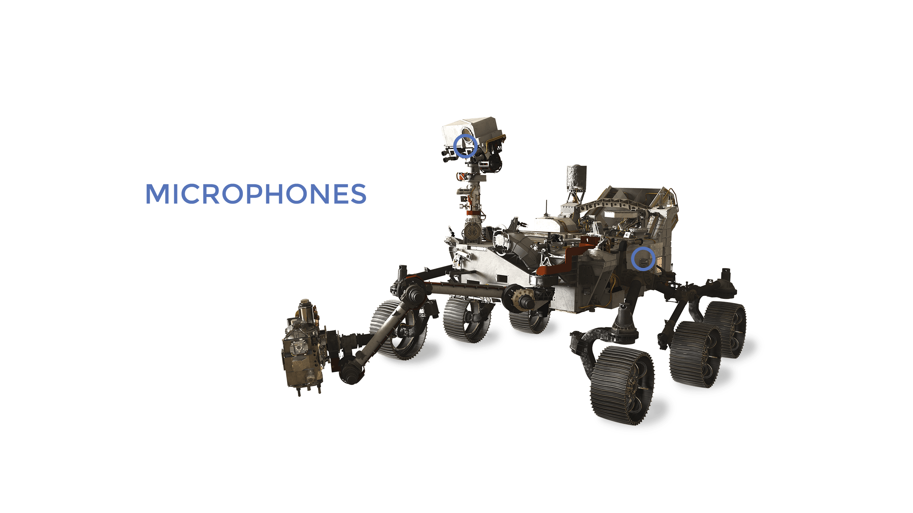
Колеса та ноги марсохода Mars 2020 Perseverance Rover Колеса і ноги
Ровер Perseverance має шість коліс, кожне зі своїм індивідуальним двигуном.
Два передні та два задні колеса також мають окремі рульові мотори. Ця можливість рульового управління
дозволяє транспортному засобу повертатися на місце на цілих 360 градусів. Чотириколісне рульове управління
також дозволяє роверу крутитись і вигинатися, роблячи дугоповороти.
Як рухаються колеса
Наполегливість використовує подібну систему підвіски "рокер-візок", яка також використовувалася в науковій
лабораторії Марса, марсоходах Mars Exploration Rover та Pathfinder. Система підвіски - це те, як колеса
з'єднані з рештою ровера та контролюють взаємодію ровера під час марсіанської місцевості.
Система підвіски складається з трьох основних компонентів:
Диференціал : з’єднується з лівою та правою коромислами та корпусом ровера за допомогою шарніра в центрі
верхньої палуби ровера.
Рокер : по одному на лівій та правій стороні ровера. З'єднує переднє колесо з диференціалом та візком
іззаду.
Тележка : підключає середнє та заднє колеса до коромисла.
Під час руху по нерівній марсіанській місцевості система підвіски підтримує відносно постійну вагу на
кожному колесі ровера. Підвіска також мінімізує нахил ровера під час руху, зберігаючи його більш стабільним.
Підвіска рокера-візка ровера дозволяє їздити через перешкоди (наприклад, скелі) або через поглиблення,
великі як колесо ровера (52,5 сантиметра, 20,7 дюйма). Кожне колесо має агресивний протектор, що складається
з 48 грунтовок (або затискачів), оброблених на його поверхні. Грунтовки забезпечують роверу відмінне
зчеплення при їзді як на м’якому піску, так і на твердих скелях.
Завзятість розроблена для витримки нахилу на 45 градусів у будь-якому напрямку без перекидання. Для
додаткового захисту та безпечної їзди водії роверів уникають місцевості, яка може спричинити нахил більше 30
градусів.
Швидкість Rover
За стандартами транспортних засобів Землі марсохід Perseverance працює повільно. Однак за марсіанськими
стандартами транспортних засобів, “Наполегливість” є видатним виконавцем. Ровер має максимальну швидкість на
рівному твердому ґрунті 4,2 сантиметра в секунду або 152 метри на годину. Це трохи менше 0,1 милі на
годину. Для порівняння, темп прогулянки 3 милі на годину становить 134 сантиметри в секунду, або 4828 метрів
на годину.
Однак у випадку вивчення Марса швидкість не є найважливішою якістю. Йдеться про подорож та напрямки на
шляху. Повільний темп є енергоефективним, споживаючи менше 200 Вт. Порівняйте це з 200-сильним автомобільним
двигуном, який споживає майже 150 000 Вт!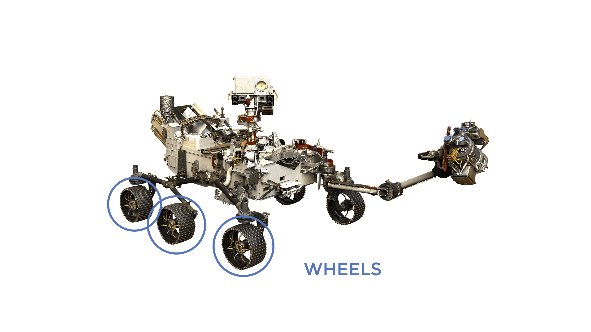
Робототехнічна рука
Робот-рука із завдовжки 7 футів на наполегливості може рухатися так само, як ваша. Він має плечові, ліктьові
та зап’ясткові «суглоби» для максимальної гнучкості. Рука дозволяє роверу працювати так, як це робив би
геолог-людина: тримаючи та використовуючи наукові інструменти «рукою» чи баштою. Власний "ручний інструмент"
ровера витягує ядра з гірських порід, робить мікроскопічні зображення та аналізує елементний склад та
мінеральний склад марсіанських порід та грунту.
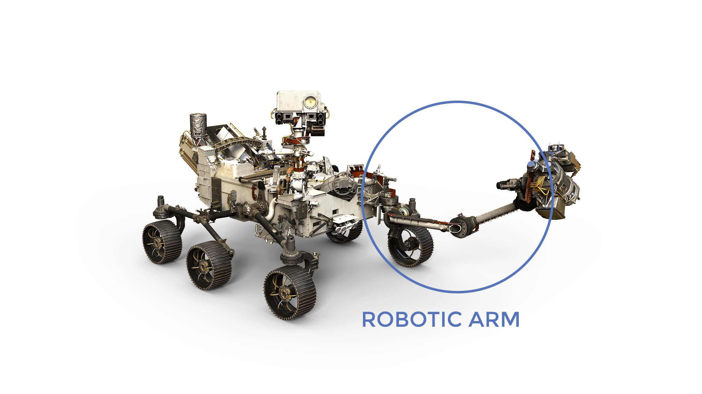
Обладнання для відбору проб на "руці" (башта)
На кінці плеча знаходиться «башта». Це як рука, яка несе наукові камери, мінеральні та хімічні аналізатори
для вивчення минулого проживання Марса та вибору найбільш науково цінного зразка для кешування. Науковими
інструментами, встановленими на башті, є:
SHERLOC і WATSON
SHERLOC призначений для вивчення корисних копалин зблизька, тому він встановлений на башті, де його можна
розмістити поруч з цілями. SHERLOC використовує спектрометри, лазер та камеру для пошуку органічних речовин
та мінералів, які зазнали змін у водному середовищі та можуть бути ознаками минулого життя мікробів.
SHERLOC має помічника. Камера WATSON також встановлена на "руці /". Це як ручна лінза геолога, що збільшує
та реєструє текстури гірських порід та грунту, які вивчаються аналізатором мінералів SHERLOC. Його
розташування на спритній башті роботизованої руки означає, що WATSON може бути розміщений поблизу цілей, що
знаходяться в межах досяжності руки. WATSON також є вбудованим "помічником" камери для SHERLOC та PIXL.
WATSON також надає цінний огляд систем роверів, таких як колеса та інструменти, встановлені низько на
ровері, поза межами зору Mastcam-Z.
PIXL
PIXL встановлений на башті, оскільки він повинен мати можливість рухатися близько до своїх цілей на
мінерали. Він здатний виявляти ознаки минулого життя. PIXL шукає змін у структурі та хімічних речовинах
марсіанських порід та ґрунту, залишених будь-яким древнім мікробним життям. PIXL вивчить можливі зразки
зразків кандидатів. Інформація, яку вона збирає, буде використана для вирішення, які з них є найбільш
цікавими з наукової точки зору.
Датчик контакту із землею
Башта має спеціальний датчик для захисту від пошкоджень, якщо рука стикається з поверхнею. Контактний датчик
подає сигнал руці ровера зупинитися, якщо вона ненавмисно торкається землі.
Обробка зразків
Наполегливістю будуть основні зразки марсіанських порід та грунту. За допомогою своєї дрилі ровер збиратиме
і зберігатиме ядра в трубах на марсіанській поверхні.
Дриль
Дриль ровера використовуватиме обертальний рух з ударними інструментами або без них, щоб проникнути на
марсіанську поверхню для збору дорогоцінних зразків. Свердло оснащено трьома різними видами насадок (бітів),
які полегшують збір зразків та аналіз поверхні. Біти для кернінгу та реголіту використовуються для збору
зразків марсіанців безпосередньо в чисту пробірку для збору зразків, тоді як шліфувальний долото
використовується для зішкрябування або "стирання" верхніх шарів гірських порід, для оголення свіжих, не
обвітрених поверхонь для дослідження.
Типи зразків гірських порід, які буде збирати свердло
Зразки
гірських порід Циліндричний свердло вирізає зразки з внутрішніх порід, відриваючи зразок гірської породи
біля основи. Кожен зразок збирається безпосередньо в чисту пробірку для збору зразків. Пробірки для зразків
мають розмір приблизно як прожектор. Кожна зібрана серцевина має діаметр 13 дюймів (13 міліметрів) і довжину
2,4 дюйма (60 міліметрів), що складає в середньому 10-15 грамів марсіанського матеріалу на трубку.
Зразки "реголіт"
Для збирання пухкого кам'янистого матеріалу, або "реголіту" на марсіанській поверхні використовується
спеціальний свердло. Як і зразки гірських порід, зразки реголіту збираються безпосередньо в чисту пробірку
для збору зразків.
PIXL
Планетарний прилад для рентгенівської літохімії називається PIXL. PIXL має інструмент, який називається
рентгенівським спектрометром. Він ідентифікує хімічні елементи в крихітних масштабах. PIXL також має камеру,
яка робить супер-крупні фотографії текстур гірських порід та грунту. Він може бачити особливості, такі
маленькі, як зерно солі! Ця інформація разом допомагає вченим шукати ознаки минулого життя мікробів на
Марсі.5 речей, які слід знати
1
PIXL виявляє ознаки минулого життя
PIXL шукає зміни текстур та хімічних речовин у марсіанських скелях та грунті, залишені будь-яким древнім
мікробним життям.
1
Компактний PIXL
- розмір приблизно в ланч-бокс і важить близько 10 фунтів. Це дивно - лабораторні інструменти, які виконують
ту саму роботу, зазвичай мають розмір великого пляжного кулера і важать понад 500 фунтів!
1
PIXL дуже гнучкий.
Рентгенівський промінь рухається так само легко, як лазерний вказівник в руці вченого. Крихітні двигуни
дають йому свободу руху, як у міні-версії шестиногих систем керування рухом, що використовують симулятори
польоту.
1
PIXL бачить надзвичайно малий.
Його рентгенівський промінь може зосередитись на особливостях гірських порід, таких маленьких, як зерно
солі. Це дозволяє PIXL знаходити будь-які дрібні сліди життя, які мікроби могли залишити позаду.
1
PIXL набагато перевищує подібні інструменти
PIXL виявляє понад 20 хімічних "відбитків пальців" - навіть коли кількість становить лише кілька частин на
мільйон. Він знаходить саме крихітну пляму в скелі, де знаходиться кожна хімічна речовина.
>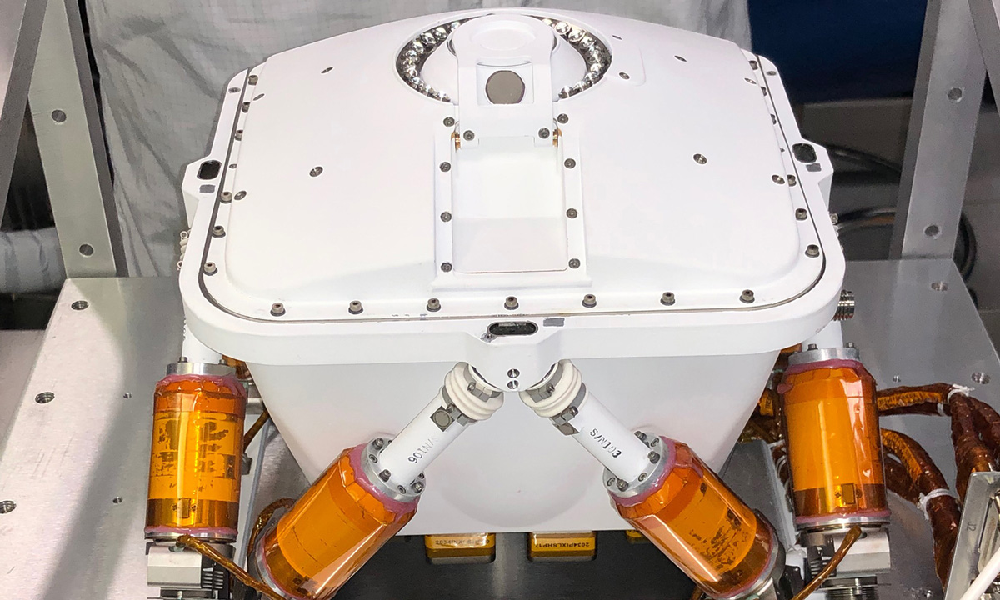
ШЕРЛОК
Скануюче середовище для проживання з використанням раману та люмінесценції для органіки та хімічних речовин
має прізвисько: SHERLOC. Встановлений на робототехнічній руці ровера, SHERLOC використовує камери,
спектрометри та лазер для пошуку органічних речовин та мінералів, які були змінені водним середовищем та
можуть бути ознаками минулого життя мікробів. Окрім чорно-білої контекстної камери, SHERLOC допомагає
WATSON, кольорова камера для зйомки крупних пластів зернистих порід та текстур поверхні.
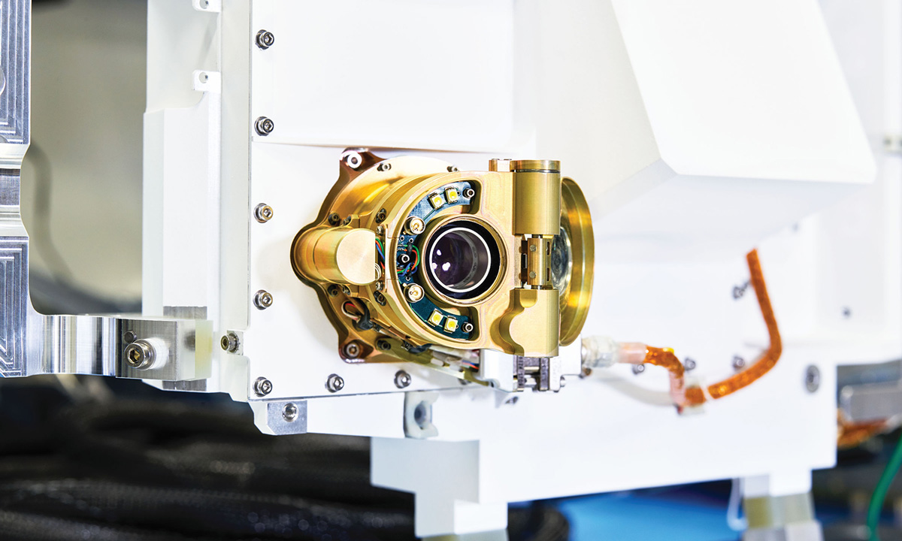
Обробка зразків
Марсохід Perseverance збиратиме зразки з марсіанських порід та ґрунту за допомогою свого бура. Потім ровер
зберігатиме ядра зразків у пробірках на марсіанській поверхні. Весь цей процес називається "кешування
зразків".
Марс 2020 стане першою місією, яка продемонструє це на Марсі. Це потенційно може відкрити шлях для майбутніх
місій, які зможуть зібрати зразки та повернути їх на Землю для інтенсивного лабораторного аналізу.
Три основні етапи обробки зразків:
Крок 1: Збір зразків
Крок 2: Зразок герметизації та зберігання на борту
Крок 3: Нанесення зразків на поверхню
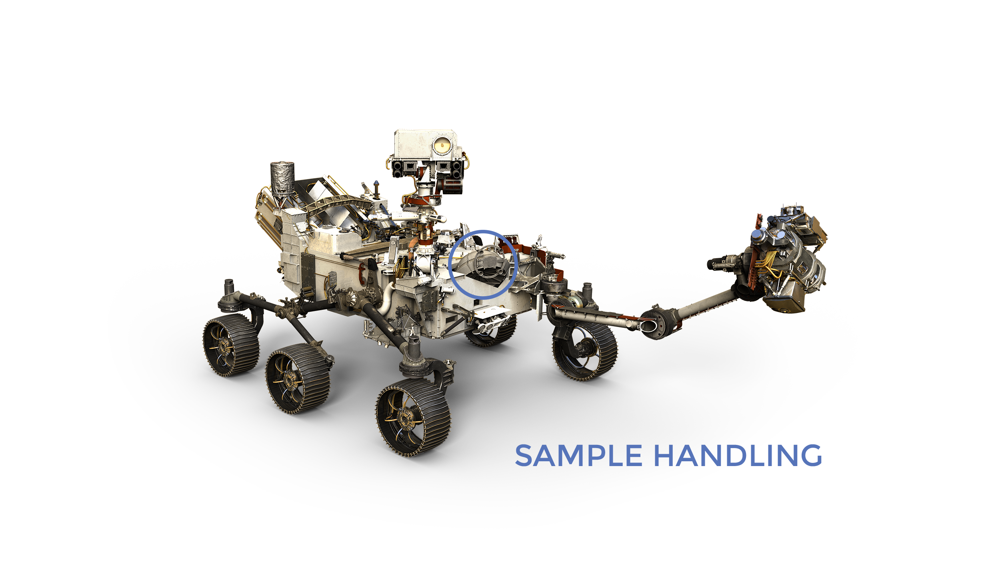
Електроенергія
Роверу Perseverance потрібна електрична потужність для роботи.
Без живлення марсохід не може рухатися, користуватися своїми науковими приладами або спілкуватися із Землею.
Наполегливість несе в собі радіоізотопну енергетичну систему. Ця енергосистема виробляє надійний потік
електроенергії, використовуючи тепло радіоактивного розпаду плутонію як його "паливо".
Джерело живлення називається "багатоемісійний радіоізотопний термоелектричний генератор" або, коротше,
MMRTG. MMRTG перетворює тепло від природного радіоактивного розпаду плутонію в електрику. Ця система
живлення заряджає дві основні батареї ровера. Тепло від MMRTG також використовується для підтримки
інструментів та систем ровера при їх правильних робочих температурах.
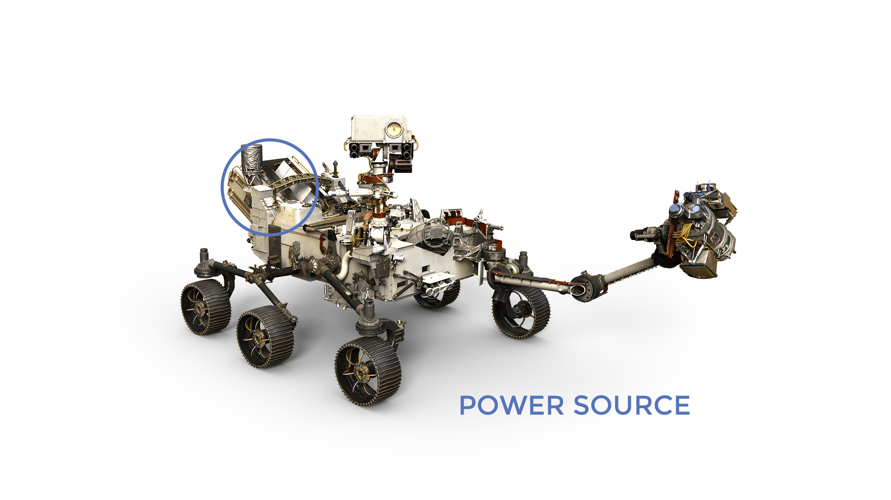
Ультрависокочастотна
антена
Ультрависокочастотна
антена
Найчастіше Mars 2020 використовує свою антену надвисокої частоти (UHF) (близько 400 мегагерц) для зв'язку з
Землею через орбіти НАСА навколо Марса. Оскільки антени ровера та орбіти знаходяться в близькій відстані
одна від одної, вони діють трохи як прогулянкові станції порівняно з далекосвітлим телекомунікаційним
зв'язком із Землею, забезпечуваним антенами з низьким та високим коефіцієнтом посилення.
Зазвичай для проходження радіосигналом відстані між Марсом і Землею, залежно від положення планети, потрібно
приблизно 5 - 20 хвилин. Використання орбітальних апаратів для ретрансляції повідомлень вигідно, оскільки
вони набагато ближчі до Наполегливості, ніж антени Глибокої космічної мережі (DSN) на Землі. Ровер з
обмеженою масою та потужністю може досягти високих швидкостей передачі даних до 2 мегабіт в секунду на
відносно короткій відстані релейної лінії зв'язку з орбітами. Потім орбіталі використовують свої набагато
більші антени та передавачі, щоб передавати ці дані по міжміській лінії назад на Землю.
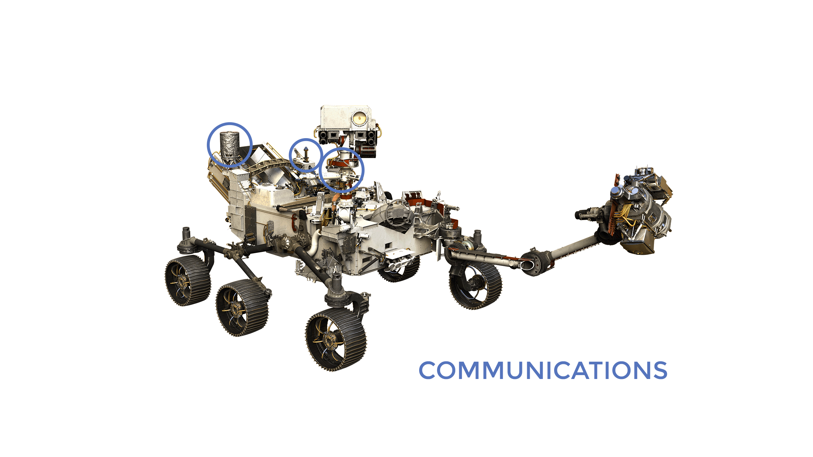
Антена з високим коефіцієнтом посилення
Х-діапазону
Антена з високим коефіцієнтом посилення є керованою, тому вона може направити свій радіопромінь у певному
напрямку. Перевага керованої антени полягає в тому, що всьому роверу не потрібно міняти положення, щоб
розмовляти із Землею, яка завжди рухається в марсіанському небі. Подібно до того, як повертати шию, щоб
поговорити з кимось поруч із собою, а не повертати все тіло, ровер може заощадити енергію та зробити речі
простими, рухаючи лише антену. Його високий коефіцієнт підсилення дозволяє сфокусувати промінь, дозволяючи
збільшити швидкість передачі даних на довгій лінії назад до Землі.
MEDA
Марсовий аналітик екологічної динаміки відомий як MEDA. Він проводить вимірювання погоди, включаючи
швидкість та напрямок вітру, температуру та вологість, а також вимірює кількість та розмір частинок пилу в
атмосфері Марса.
5 речей, які слід знати
1
MEDA вивчає запилене середовище
Пил на Марсі. Він рухає хімічними процесами на поверхні та в атмосфері. Це впливає на температуру та погоду.
1
MEDA допомагає передбачити погоду
MEDA допомагає астронавтам знати, з якими погодними умовами вони зіткнуться на Марсі. Їх безпека залежить
від точних прогнозів погоди.
1
MEDA вимірює випромінювання
Випромінювання сонця та космосу може змінити сліди будь-якого минулого життя на скелях Марса. MEDA допомагає
вченим зрозуміти ці зміни та підказує, на що слід звертати увагу.
1
MEDA вимірює
водяну пару Датчик вологості MEDA повідомляє, як водяна пара обмінюється між "грунтом" та атмосферою на
Марсі.
1
MEDA показує вплив погоди
MEDA показує, як пил і погода впливають на роботу марсохода NASA Mars 2020, включаючи його камери та систему
виробництва кисню MOXIE.
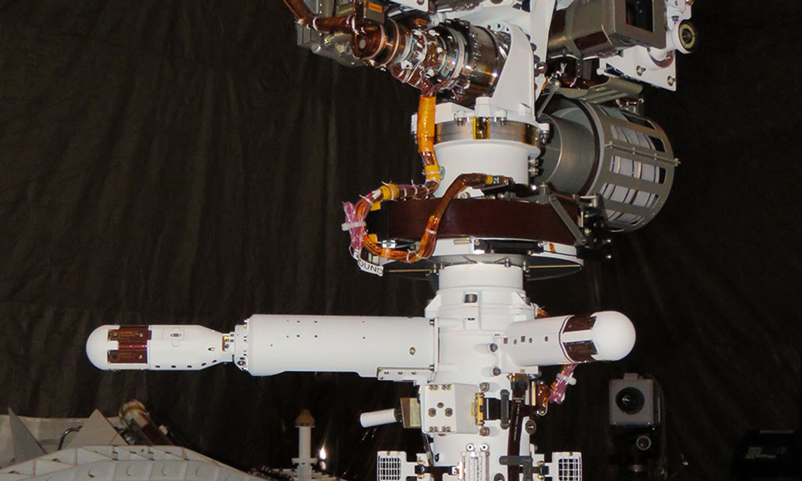
MOXIE
Експеримент із використання кисневого середовища Mars Oxygen більш відомий як MOXIE. NASA готується до
досліджень Марсом людини, і MOXIE продемонструє спосіб, яким майбутні дослідники можуть виробляти кисень з
атмосфери Марса для палива та дихання.
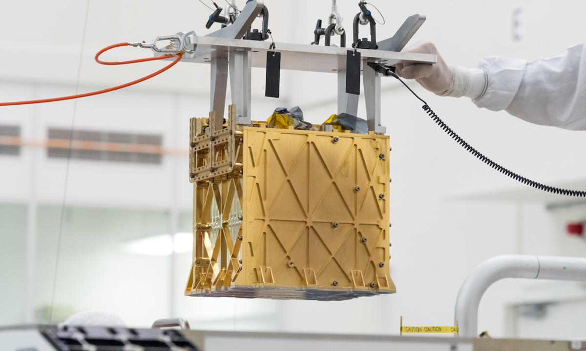
RIFMAX
Радіолокаційна камера для експерименту з підземних досліджень Марса, відома як RIMFAX, використовує
радіолокаційні хвилі для зондування землі під марсоходом.
"Ніхто не знає, що лежить під поверхнею Марса. Тепер ми нарешті зможемо побачити, що там".
- Свен-Ерік Гамран, головний слідчий
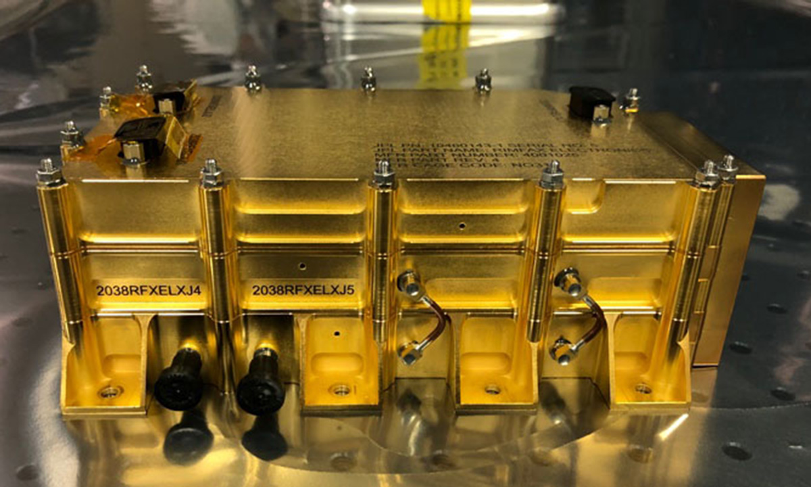
Набір для входуНабір для входу, спуску та
посадки на Марс
2020 включав:
Парашутні камери "вигляд вгору"
Встановлені на задній частині корпусу, дивлячись вгору на розгортання парашута та інфляцію. Було встановлено
три камери, дві з яких успішно записали парашут.
Камера
спуску "вниз погляд" Встановлена на спуск, спускаючись вниз на ровер, коли він був опущений під час
маневру підйомного крана
Камера "вигляд вгору"
на ровері Встановлена на палубі ровера, дивлячись вгору на спуск під час маневру підйомного крана та
поділу етапу спуску
Камера Rover "погляд вниз"
Встановлена під марсоходом, дивлячись вниз на поверхню під час посадки
Окрім надання інженерних даних, камери можна вважати "корисним навантаженням для залучення громадськості".
Вони, звичайно, дали драматичне відчуття їзди вниз на поверхню! Окрім комп'ютерної анімації, ніколи не було
жодного виду парашутного отвору в марсіанській атмосфері, ровера, опущеного на поверхню Марса, або етапу
спуску, що відлітав після приземлення ровера. Наполегливість дала нам усім перше місце на посадку на Марс
вперше в історії освоєння космосу.